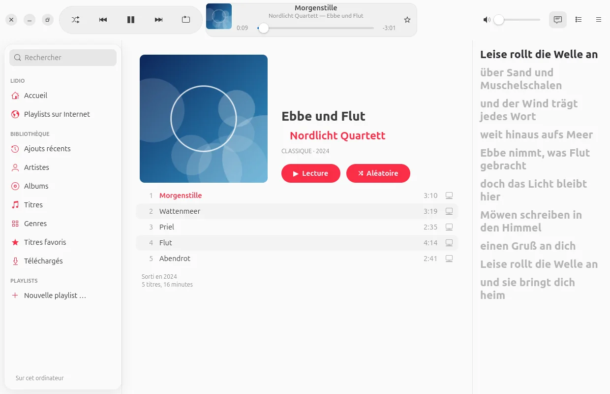
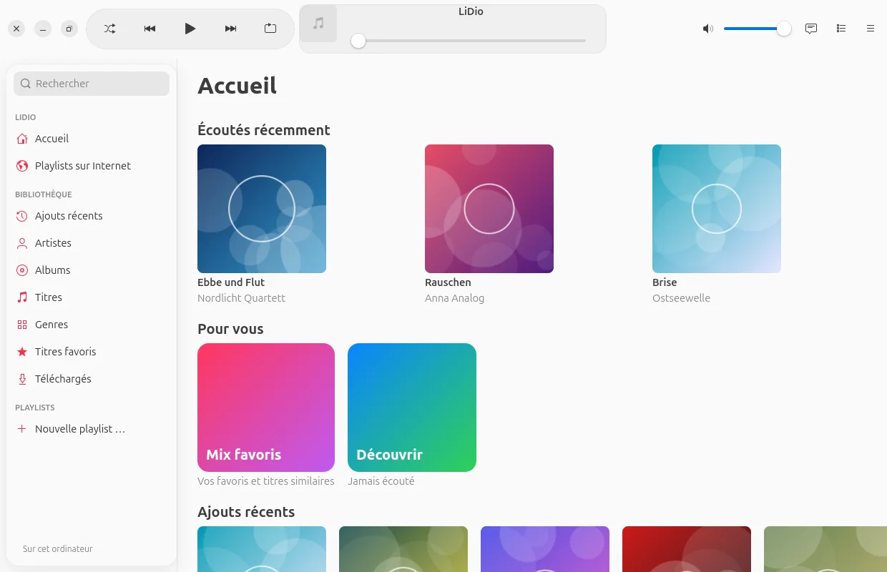
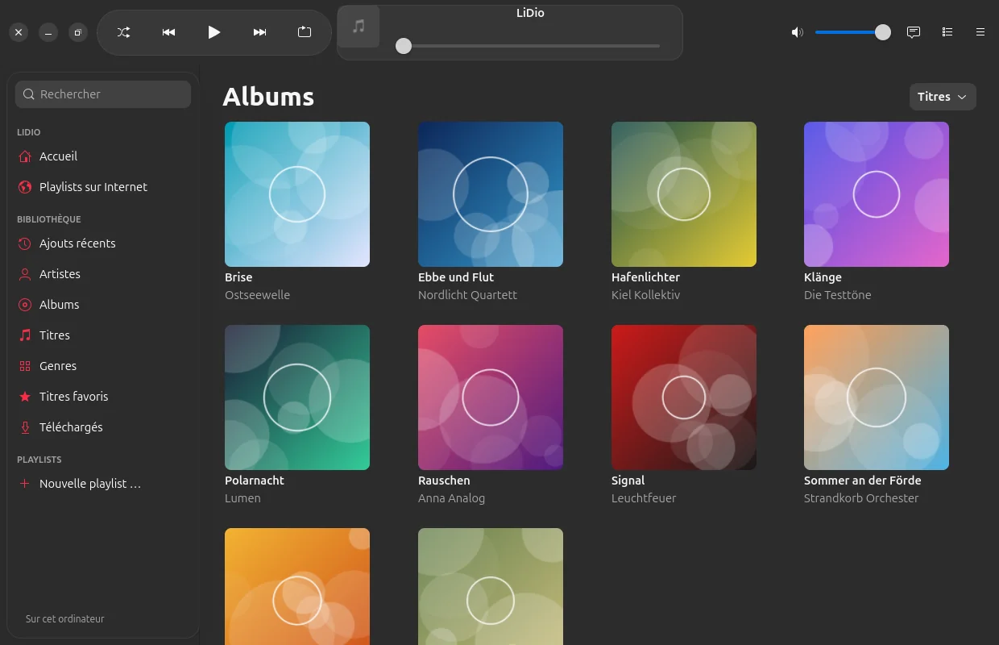
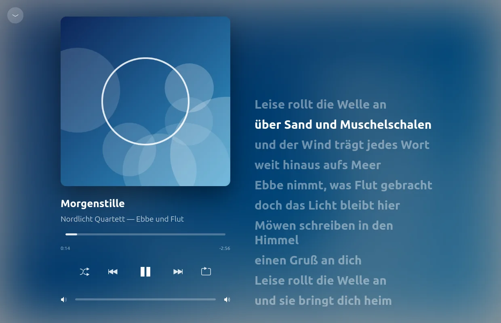
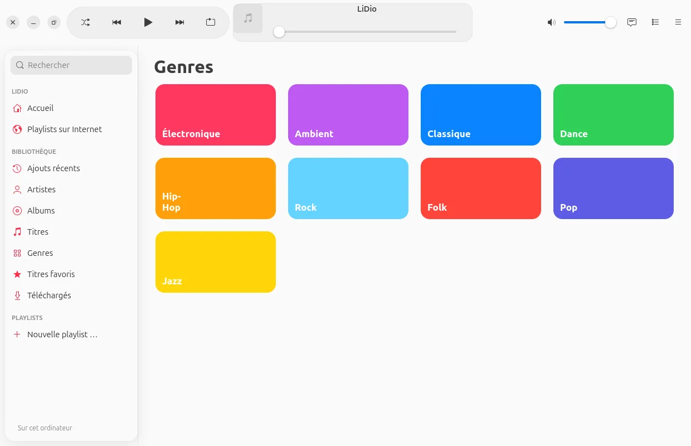
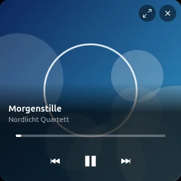

Nouveau : version 0.1 bêta · Android et Ubuntu
Nouveau : version 0.1 bêta · Android et Ubuntu
Votre musique.
Votre serveur.
LiDio joue la musique qui vous appartient – depuis votre Emby, Jellyfin ou Navidrome à la maison
ou depuis des dossiers sur l’appareil. S’utilise comme l’app Musique de l’iPhone et du Mac. Sans abonnement.

Conçu comme l’app Musique.
Pour votre propre collection.
Des années à collectionner vinyles, CD et fichiers – et il faudrait ne les écouter que dans une app par abonnement ? LiDio amène votre collection sur téléphone et ordinateur comme vous le connaissez chez Apple : grandes pochettes, listes claires, « À l’écoute » avec paroles. Conçu selon les Human Interface Guidelines d’Apple, en look verre moderne ou classique.
Bibliothèque
Chaque chose à sa place.
Accueil avec des mix pour vous, albums, artistes, morceaux, genres, morceaux favoris et playlists – rapide, même avec des dizaines de milliers de morceaux.


À l’écoute
Grand. Calme.
Avec les paroles.
La pochette remplit l’espace, ses couleurs s’étalent doucement derrière, les paroles défilent – et un clic sur une ligne y saute. Les paroles viennent de votre serveur ou, si vous le souhaitez, de lrclib.net.

Playlists
Vos listes
déménagent avec vous.
Apportez simplement les playlists d’autres apps, de Deezer ou de Spotify : LiDio retrouve chaque morceau sur votre serveur – même s’il s’y appelle « (Remastered 2011) ».
- Trouvé, incertain, manquant : vert, orange, rouge – pour les incertains, c’est vous qui choisissez.
- Ce qui manque reste visible : en gris à sa place et dans la description de la playlist – lisible dans n’importe quelle app.
- Fichiers : M3U, M3U8, PLS, XSPF, CSV ou simple texte.
- Partager : avec tout le monde sur votre serveur ou avec certaines personnes – pour écouter ou modifier ensemble.

Pour les nostalgiques
Pour tous ceux
à qui Winamp manque.
Un interrupteur et LiDio devient un lecteur Winamp 2 – avec de vrais skins du Winamp Skin Museum, égaliseur, spectre et fenêtre de playlist. Et Milkdrop peint ce que vous entendez.
- Des dizaines de milliers de skins à parcourir, un clic pour en changer.
- Égaliseur à dix bandes qui agit vraiment sur le son.
- Milkdrop via projectM – en fenêtre ou en plein écran.
- Mini-lecteur dans le style d’Apple, quand on veut faire simple.



Fonctions
Et bien plus encore.
Emby, Jellyfin, Navidrome
Plus des dossiers sur l’appareil. L’adresse rapide à la maison, la seconde en déplacement – LiDio choisit tout seul.
Écouter hors ligne
Téléchargez morceaux, albums et playlists sur l’appareil – l’un après l’autre, avec un anneau de progression sur chaque morceau.
Partager un morceau
Un lien dans Signal & co – qui a LiDio touche le lien et écoute le morceau depuis sa propre bibliothèque.
Morceaux favoris et mix
L’étoile est enregistrée sur votre serveur. Elle donne naissance au mix des favoris et à « Découvrir » avec ce que vous n’avez pas encore écouté.
File d’attente et lecture automatique
À suivre, Historique, réorganiser – et quand la liste se termine, la lecture continue avec de la musique similaire de votre collection.
Visite et guide
Au premier lancement, une courte visite montre les endroits essentiels ; le guide se trouve dans l’app.
Confidentialité
Votre musique
reste chez vous.
LiDio parle à votre serveur – et sinon uniquement là où vous l’activez vous-même. Pas de compte chez nous, rien dans un cloud.
LiDio n’interroge les paroles (lrclib.net), les playlists Deezer et le musée des skins que lorsque vous les utilisez – et n’envoie que le nécessaire : titre et artiste, le terme recherché.
Télécharger
Lancez-vous. Gratuitement.
Version 0.1 bêta – pour Android 10 et ultérieur ainsi qu’Ubuntu 24.04 et ultérieur.
Android
Téléchargez et installez. LiDio demande les notifications (pour les commandes de lecture) – rien d’autre.
Signature de l’app
SHA-256: 423d95a4d6f4740ecd1325b55705f26f8e5f43675d2368d58a0d4976d3c95b0b
Ubuntu
Décompressez et lancez ./install.sh – LiDio apparaît dans le menu des applications. Le script compile aussi Milkdrop si vous le souhaitez.
Code source
Chaque ligne consultable, y compris les bibliothèques fournies et leurs licences. Bugs ou idées bienvenus dans le gestionnaire de tickets.
Développé par Olaf Winkler dans le Schleswig-Holstein.
Sommes de contrôle : SHA256SUMS · Bêta, car LiDio n’a encore été testé qu’avec peu de serveurs. Les images montrent une collection de démonstration inventée.